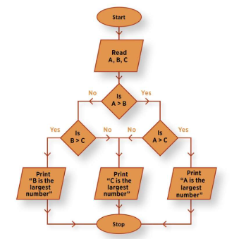

Mis on Flowchart?
Flowchart ehk vooskeem näitab tegevuste järjekorda samm-sammult.
Kes lõid Flowchart diagrammi?
Flowchart diagrammi loodi 1921 aastal Frank Bunker Gilbreth
ja Lillian Moller Gilbreth poolt.
Kus Flowchart diagramme kasutatakse?
- programmi loogika planeerimisel
- algoritmide kirjeldamisel
- veebirakenduse töövoo selgitamisel
- äriprotsesside kirjeldamisel
- otsustusprotsesside näitamisel
Flowchart kujundid
Start / End
Ovaal tähistab protsessi algust või lõppu.
Process
Ristkülik tähistab tegevust või sammu, mida süsteem teeb.
Input / Output
Rööpkujund tähistab andmete sisestamist või tulemuse väljastamist.
Decision
Romb tähistab tingimust või otsustuskohta, kus protsess võib liikuda erinevates suundades.
Arrow
Nool näitab protsessi liikumise suunda.
Kasutusnäidis
Näiteks Bitcoini kalkulaatori puhul saab vooskeemi abil näidata, kuidas kasutaja sisestab Bitcoini koguse, süsteem kontrollib sisendit, arvutab väärtuse ja kuvab tulemuse.
Bitcoin kalkulaatori vooskeem
Näidisena saab kasutada varem Bitcoinäpi tegemisel loodud vooskeemi.
Vaata Bitcoin kalkulaatori vooskeemi